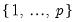

From the main EViews menu, click on Quick/Estimate Equation... to open the equation dialog or click on
Object/New Object..., then select
Equation and click on the
Estimate button. Once the equation dialog opens, select
ARDL - Autoregressive Distributed Lag Models from the
Method dropdown,
Under the Linear dynamic specification, specify the dependent variable followed by symmetric (distributed-lag) regressors, starting with the dependent (autoregressive) variable,
where variable is the series name or expression, and
lag is an integer for the fixed lag. An individual fixed lag specified using
@fl takes precedence over the overall automatic or fixed lag selection methods specified in the section.
You should specify any exogenous and deterministic regressors in the Fixed regressors specifications section. The five deterministic cases involving a constant and trend discussed in relation to bounds testing (
“Bounds Test View”), may be specified using the
Trend specification dropdown. Any remaining exogenous regressors should can be specified under the
Fixed regressors edit field.
The section contains settings for the choice of the dependent variable lags

and regressor lags

:
Select the maximum number of lags to be considered for the dependent and distributed-lag variables by adjusting the Max lags drop downs for variables and . The total number of models that are evaluated under such procedures is the maximum number of combinations of the set of numbers  and

additional sets of numbers , so that we have – where

and

are respectively the maximum number of lags of the dependent and explanatory variables specified at the time of estimation, and

is the total number of distributed-lag regressors. For instance, with 2 distributed-lag regressors and the default values , the total number of models under consideration would be 100.


. You may choose model selection criterion is used by clicking on the Options tab and selecting the desired method under the Model Selection Criteria dropdown menu.